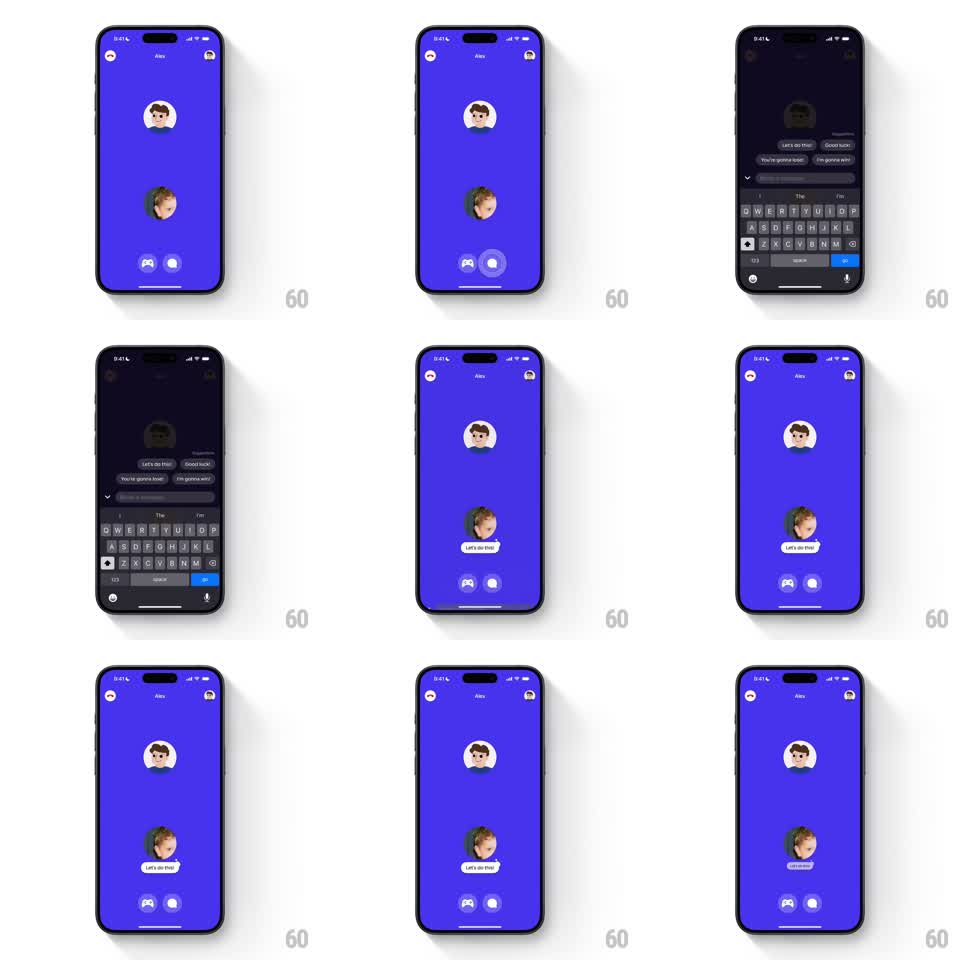

Media
Frame-by-frame

Rebuild this interaction 1:1: Honk's in-call chat suggestions - on the purple call screen, tapping the chat button slides up a suggestion sheet with canned lines ("Let's do this!", "Good luck!", "You're gonna lose!", "I'm gonna win!"); picking one springs a white bubble out of your avatar, which then shrinks away.

Rebuild this interaction 1:1: Honk's in-call chat suggestions - on the purple call screen, tapping the chat button slides up a suggestion sheet with canned lines ("Let's do this!", "Good luck!", "You're gonna lose!", "I'm gonna win!"); picking one springs a white bubble out of your avatar, which then shrinks away.
## Integration
Integration: stack-agnostic spec - springs given as stiffness/damping, timed motions as duration + curve; map every value to your framework and animation library of choice.
## Scene
Purple-blue call screen: two circular avatars stacked (Alex top, you bottom), gamepad and chat buttons at the bottom. The chat sheet: dark rounded sheet with drag chevron, four suggestion bubbles in two columns, and the keyboard below with a blue "go" key. After selection, the sheet closes and a small white pill bubble ("Let's do this!") appears attached under your avatar.
## Motion spec
Pattern: springy avatar-anchored chat bubble.
- Tap chat button: the button fills white (100ms); the suggestion sheet slides up over the dimmed call screen (spring ~300/24, 350ms), keyboard rises with it.
- Tap a suggestion: the sheet slides down (280ms, ease-in), keyboard dismisses with it.
- The bubble spawns from your avatar: scale 0 -> 1 anchored at the avatar's bottom edge (spring ~340/14, 300ms) with a slight overshoot, text fading in at 60% scale.
- The bubble holds (~2.5s), then shrinks back into the avatar (scale -> 0, 250ms, ease-in) and disappears.
- A second sent bubble replaces the first (old shrinks as new springs, 100ms overlap).
## Calibration
- The bubble is anchored to the sender's avatar, not floating mid-screen - it must scale out from that point.
- Sheet and keyboard move as one unit; no gap opens between them.
## Reduced motion
The sheet and bubble fade (250ms) without springs.
## Don't miss
- The suggestion chips are dark rounded bubbles, two per row, left-aligned - not a list.
- The avatar behind the bubble stays visible; the bubble hangs below it like a caption.